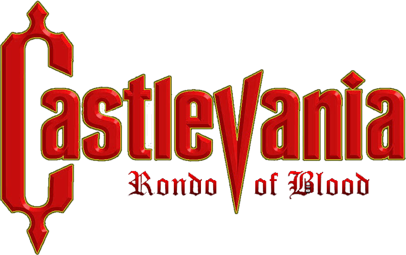
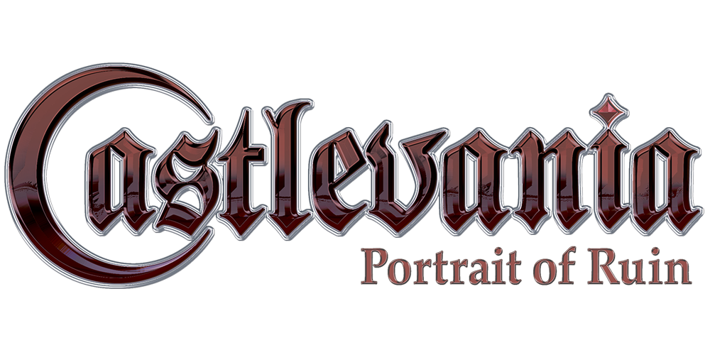
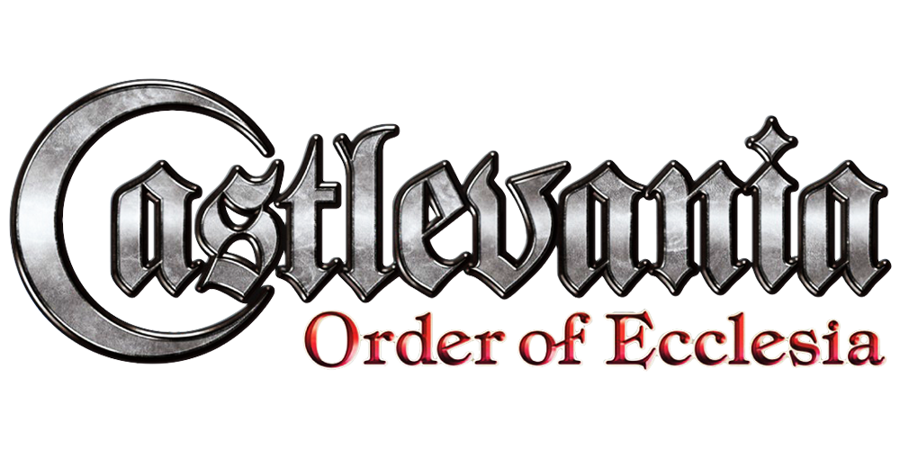
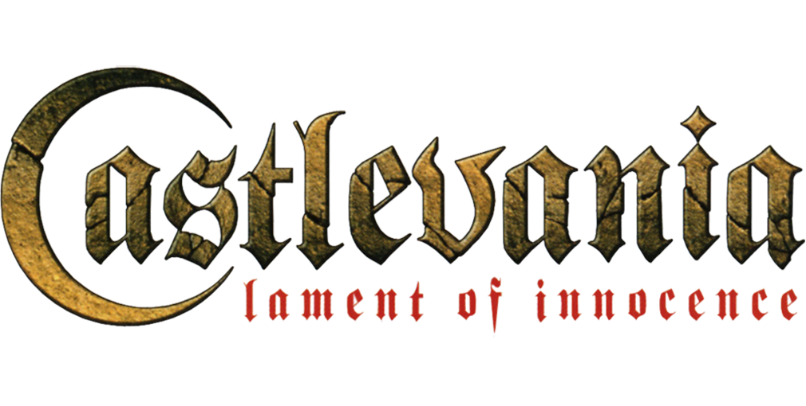

Rondo of Blood se passa em 1792. A história é focada em Richter Belmont, o herdeiro do chicote Vampire Killer e descendente direto de Simon Belmont. Richter vai até o castelo após sua amada Annete ser sequestrada por Shaft, um servo de Dracula, para ser usada como isca para uma armadilha. Em sua missão, Richter acaba resgatando outras mulheres, incluindo: Maria Renard, uma órfã que insiste em acompanhá-lo; Terra, uma freira que o confunde com uma manifestação de Deus; Iris, a filha do médico do vilarejo; e finalmente Annette. Após eliminar Shaft, Richter enfrenta e derrota Dracula.

Está ambientado em 1944 na Europa durante a Segunda Guerra Mundial e é uma continuação da história de Castlevania: Bloodlines. Jonathan Morris e a feiticeira Charlotte Aulin são os protagonistas. Eram amigos de infância, ambos descendentes de clãs lendários dedicados à proteção da humanidade contra as forças do mal. Jonathan Morris é filho de John Morris. Ao contrário da família Belmont, a quem estão relacionados, os Morris não podem usar o poder total do lendário vampiro Vampire Killer por padrão. Charlotte Aulin é descendente do clã Belnades, uma linhagem conhecida por sua proeza mágica.
Symphony of the Night ocorre durante o ano de 1797, 5 anos após os eventos de Rondo of Blood. A história começa com a derrota de Richter Belmont do Conde Dracula, em referencia ao fim do antigo jogo. No entanto, apesar de Dracula ser derrotado, Richter desaparece sem deixar rastro. O castelo surge novamente cinco anos depois, e com o desparecimento de Richter, não há Belmonts disponiveis para entrar o castelo, então Alucard, o filho de Dracula, desperta de seu sono auto induzido e decide investigar o que aconteceu durante o sono dele. Entretanto, Maria Renard, a cunhada de Richter, entra no própria Castelo para procurar o Richter.

A história da vez não fala sobre Belmonts. Após o fim do famoso clã de caçadores de vampiros, Surgiram ordens para combater Drácula. Ecclesia é a organização mais famosa e promissora, sendo formada por magos habilidosos e possuidora de magias denominadas Glyphs, em especial uma denominada Dominus. Albus e Shanoa são amigos e membros dessa ordem. Shanoa havia sido escolhida para ser a portadora da poderosa magia, fato esse que aconteceria através de um ritual, feito pelo mestre de ambos, Barlowe. Porém Albus se mostra traidor e rouba o Glyphs na hora do ritual deixando shanoa incociente acordando sem memória e emoções.

Aqui o protagonista é Leon Belmont, um cavaleiro romeno recém-chegado das Cruzadas que teve sua esposa Sara raptada por criaturas das trevas. Mathias Cronqvist, amigo de guerras de Leon, explica que Sara foi mantida presa no castelo das trevas, Castlevania, regido pelo vampiro Walter Bernhard. Leon decide invadir o castelo para salvar sua esposa, e no caminho ele acaba conhecendo Rinaldo Gandolfi, um misterioso alquimista e lojista próximo ao Castelo, que resolve ajudá-lo na jornada.